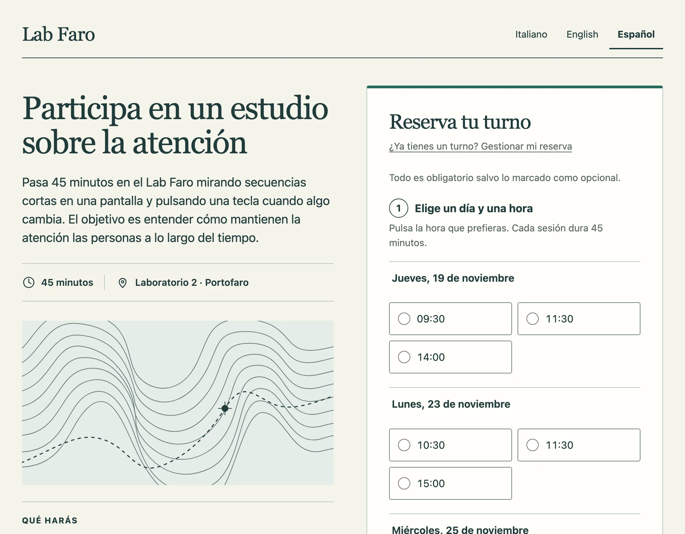
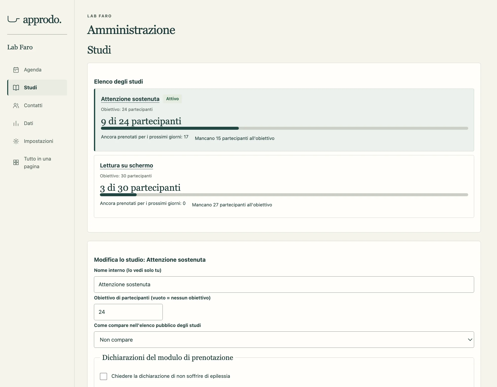
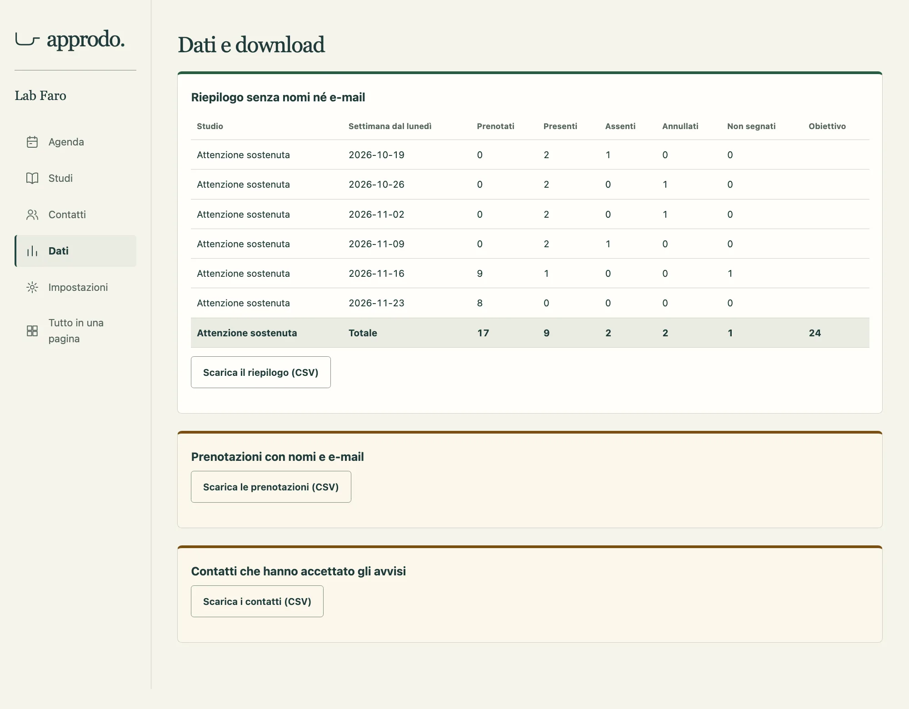

Cinco secciones, un panel
Agenda, Estudios, Contactos, Datos y Ajustes. El panel funciona sin JavaScript.
Gratis · Código abierto · Con atribución
Una página pública para quienes participan. Un panel privado para el laboratorio. Sesiones de cualquier duración, con las horas de inicio que fije el laboratorio.
En el plan gratuito de Cloudflare. Un solo archivo que configurar.

01 / Los tiempos del laboratorio
Una sesión puede durar 50 minutos con inicios cada 60 minutos, por ejemplo a las 10:00, a las 11:00 y a las 12:00. Quedan 10 minutos entre una sesión y la siguiente. El laboratorio fija las horas de inicio.
El laboratorio fija las horas de inicio. Approdo reserva el margen entre una sesión y la siguiente.
Todo el horario, en site.config.js: sessionMinutes: 50, slotMinutes: 60, defaultTimes: ["10:00", "11:00", "12:00"].
02 / Dentro de Approdo
Cada participante elige un día y un turno. El laboratorio abre los días, registra la asistencia y organiza el estudio. Son capturas reales, con un laboratorio ficticio. Todas las imágenes se pueden abrir a tamaño completo.

Agenda, Estudios, Contactos, Datos y Ajustes. El panel funciona sin JavaScript.
Páginas públicas en italiano, inglés y español, las que se ofrezcan. El panel está en italiano o español, a elegir en site.config.js.
Dos baterías de pruebas se ejecutan en GitHub Actions con cada push. El Worker no tiene dependencias de ejecución.

Los textos, las declaraciones y el objetivo de participantes se gestionan juntos en Estudios.

Tres exportaciones, con el aviso visible antes de descargarlas.
Si no se activa el correo, la reserva se confirma al instante en pantalla, con un archivo de calendario. Las confirmaciones y los recordatorios por correo son opcionales: los envía un pequeño Apps Script desde una cuenta de Gmail dedicada al estudio. Con el correo activo, hay que confirmar la reserva por correo en un plazo de dos horas; de lo contrario, el turno vuelve a quedar libre.


03 / Preparar el laboratorio
site.config.js.Un Worker de Cloudflare y una base de datos D1, en el plan gratuito. El Worker crea y actualiza sus propias tablas.
Se necesitan una cuenta de GitHub y una cuenta gratuita de Cloudflare. El formulario muestra varios campos: rellenar solo ADMIN_PASSWORD, una contraseña de al menos 16 caracteres (sirve una frase larga), y dejar los demás como están. No cambiar el comando de despliegue.
site.config.jsEn el nuevo repositorio que el botón ha creado en GitHub, abrir site.config.js y sustituir los datos de ejemplo: laboratorio, lugar y detalles del estudio. Después, hacer commit. Cloudflare publica de nuevo en uno o dos minutos. Mientras queden ejemplos, el sitio indica que no está configurado y no acepta reservas.
Entrar en /admin, abrir los días y las horas que se quiera ofrecer y compartir la dirección pública.
Si el formulario no funciona en la cuenta, quedan las otras dos vías. Si el botón no funciona en la cuenta, el repositorio describe también la instalación con un agente de programación y desde el terminal (desde el terminal la base de datos se crea en la UE).
04 / Cuidar a quienes participan
Las reservas se eliminan 30 días después de la sesión (el valor por defecto, que se puede cambiar). Solo quedan recuentos semanales sin nombres.
Un máximo de 20 solicitudes cada 10 minutos por red. Para ese límite se guarda durante una hora un código derivado de la dirección de red; la dirección en sí no.
Las nuevas reservas se suspenden cuando el sitio ha enviado 80 correos en 24 horas. Turnstile es opcional; si se activa, quienes reservan necesitan JavaScript.
Los recuentos semanales no tienen nombres. En un estudio pequeño, quien sepa quién ha asistido podría relacionar un recuento con una persona.
Leer qué datos guarda el producto05 / En uso
Todas las instalaciones envían un recuento diario anónimo por defecto. El laboratorio puede desactivarlo. El código del contador está en el repositorio.
El recuento empezó en noviembre de 2026. Los totales aparecen aquí cuando las instalaciones han enviado el recuento en dos días distintos. Cómo funciona el recuento.
Un identificador aleatorio de la instalación, la versión y el número de sesiones marcadas como realizadas. Sin nombres, direcciones de correo, nombre del laboratorio ni dirección del sitio.
Una instalación está activa si se ha abierto el panel en los últimos 30 días. Se cuenta desde el segundo día en que envía.
El laboratorio puede desactivarlo con una línea: usageCount: false.
06 / Antes de instalar
Approdo necesita un servidor y una base de datos, por lo que no funciona en GitHub Pages. El botón de instalación no garantiza una base de datos en la UE. Si se necesita jurisdicción UE, se usa el script de configuración con --jurisdiction eu, como se describe en el repositorio.
Los textos de privacidad y consentimiento son un punto de partida. Hay que adaptarlos al estudio. El delegado de protección de datos de la institución y el comité de ética deben revisarlos para el estudio.
Una cuenta normal de Gmail envía unos 100 correos al día. Las nuevas reservas se suspenden cuando el sitio ha enviado 80 correos en 24 horas. Puede preparar invitaciones para futuros estudios, pero no las envía por sí solo.
No hay cuentas separadas ni permisos individuales. El laboratorio comparte una sola contraseña para el panel.
Un proyecto independiente y de código abierto
Desarrolla aplicaciones para la web y el Mac y herramientas para agentes de programación.
Approdo es gratuito y de código abierto. Su licencia, la Attribution Assurance License con una condición añadida, pide dos cosas: que la línea «Hecho con Approdo de nerln» siga visible al pie de las páginas de reserva y que un estudio que haya usado Approdo lo cite.
Si Approdo resulta útil para el laboratorio, una estrella en el repositorio o recomendarlo a un colega que organice estudios ayuda a darlo a conocer.